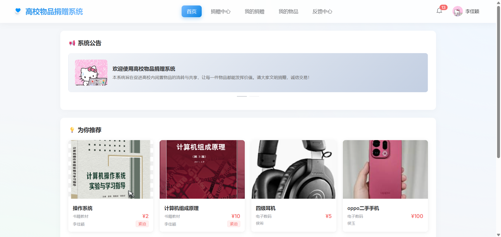
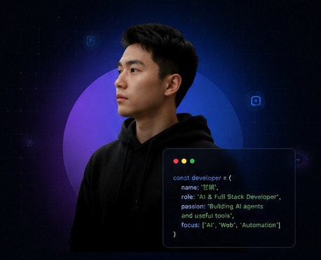
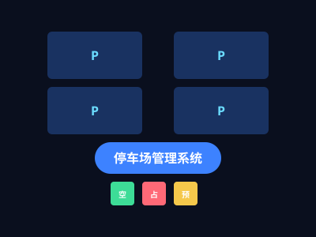
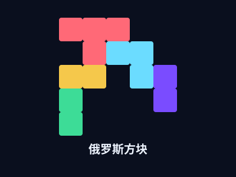

高校物品捐赠系统 核心
基于 Spring Boot + MySQL 的捐赠管理平台，解决校园闲置物品流转效率问题。
以"工程能力驱动 AI 落地"为技术路径，专注于 Java 后端开发与 RAG 智能应用构建，致力于让大模型能力真正服务于实际业务场景。

专业实践与学术成果

基于 Spring Boot + MySQL 的捐赠管理平台，解决校园闲置物品流转效率问题。

基于 RAG 架构的校园 AI 问答系统，实现多源数据语义检索与智能应答。
"文旅 + 定制出行服务"微信小程序，以第一作者发表学术论文。

基于纯前端技术栈构建的个人品牌站点，响应式设计、双主题切换、SPA 风格路由。

基于 Spring Boot + MySQL 的停车场智能管理平台，支持车位管理、智能计费与多角色权限。

基于原生 JavaScript + Canvas 的经典俄罗斯方块，支持键盘触屏双控、多档难度与实时计分。
学业成果与社会认可
校级一等奖学金（2 次）、二等奖学金（5 次）、国家励志奖学金（1 次）
多次获评"三好学生"、"优秀志愿者"
以第一作者身份在《环球科学》发表学术论文
GPA 3.43 / 4.0，连续获得校级奖学金
我是一名计算机科学与技术专业本科生，具备扎实的后端开发能力与 AI 应用工程实践经验。
在后端开发的基础上逐步深入 AI 应用方向，形成了以"工程能力驱动 AI 落地"的技术路径。关注系统的稳定性、性能与可扩展性，持续探索大模型在真实业务中的应用。
未来希望在 Java 后端与 AI 应用方向持续深耕，参与构建具备实际价值的智能系统。